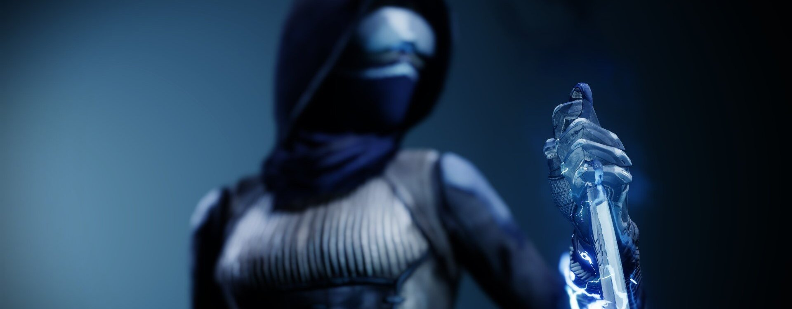
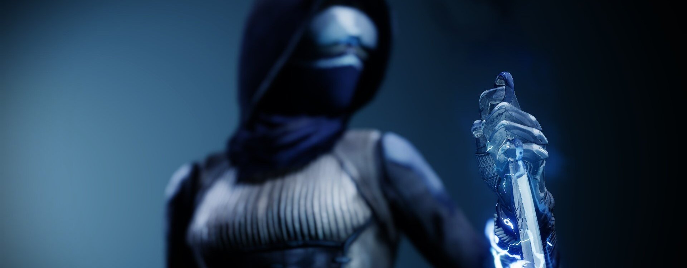

Le Chasseur
Les Titans représentent la force brute chez les Gardiens, et leurs compétences sont les plus spectaculaires. Offensivement, ils disposent d'une grande sélection de pouvoirs à impact direct qui créent des trouées parmi les cibles ennemies. Ils peuvent également ériger des barrières pour se protéger ainsi que leur escouade. Les Titans disposent d'une poussée qui leur permet de glisser en hauteur, comme les Arcanistes, mais les Titans sont plus orientés sur la vitesse que la durée de vol plané.
« Si ce n'est pas un flash, peut-être un grondement ? Une fissure dans le ciel ? Qu'est-ce qui a bien pu ouvrir la voie que nous empruntons aujourd'hui ? »
C'était la même chose à chaque fois. Quand nous nous réunissions pour une mission, il y avait ce débat métaphysique. On aurait pu se contenter d'échanger quelques anecdotes, de partager des méthodes d'affûtage de couteau... mais non, il fallait repartir dans des discussions philosophiques de feu de camp.
« L'énergie cryo-électrique n'est pas si spectaculaire », répliquai-je en me levant. « Vous le sentez aussi, vous deux, non ? Ce picotement qui s'immisce un peu partout. »
« Pour moi, c'est plutôt un bourdonnement. » L'Éveillé corpulent continua à se curer les dents pour mieux appuyer son affirmation. « Comme un million d'abeilles qui viendraient de très, très loin. »
Je tournais autour du feu et la conversation commença à me distraire, d'autant qu'il n'y avait vraiment rien à faire pour s'occuper dans les environs. Chaque fois qu'on se retrouvait pour une mission, je ne tenais pas en place.
« Mais sentir ces étincelles entre mes doigts, répondit le premier Chasseur, on aurait dit que c'était le produit d'un moment critique. »
À cent kilomètres de là, l'orage s'illumina en réponse.
Je comprenais. Je savais pourquoi on ne pouvait pas partir en mission sans parler philosophie. Pour la même raison que celle qui m'empêchait de m'asseoir. Chaque fois qu'on se retrouvait pour une mission, elle circulait entre nous comme un courant électrique : l'anticipation.
Grâce survoltée
Lance cryo-éléctrique
Créez une lance faite d'énergie cryo-électrique pure et éliminez vos adversaires de manière acrobatique. Maintenez pour dévier les projectiles avec votre lance cryo-électrique.
Formation orageuse
Envoyez votre lance pour qu'elle se plante dans une surface ou une cible imposante et envoie des secousses aux cibles proches. Au bout d'un court moment, un coup de foudre dévastateur frappe la lance et la surcharge d'énergie cryo-électrique. Une fois surchargée, votre lance envoie des éclairs sur les ennemis proches.
- Grenades